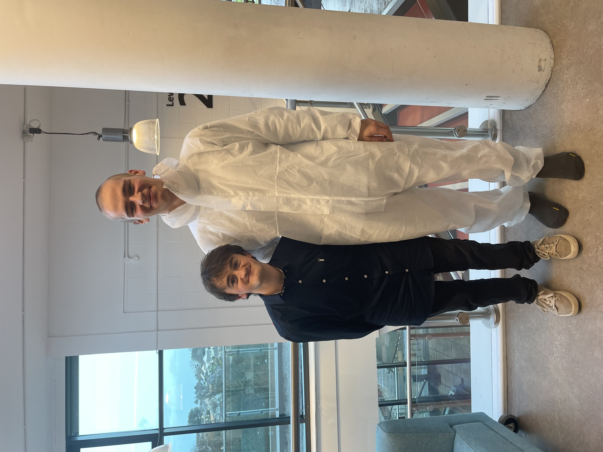

I am Rob Harrison: artist, musician, filmaker and procrastinating alcoholic.
(click the image to reach your desired destination)


If all stories start at the beginning, then what do we do with the ones that haven’t ended yet? You might be wondering who I am and how I know Mr. Harrison. Well, I am him, and they are me. We are Rob Harrison. Welcome to the coffee shop catastrophe.
Well, why not start in the middle? It’s probably been done before, right? Mr. Harrison broke his elbow in the summer of 2022. He ejected himself from the seat of his bicycle for no reason other than a lapse in judgement and partial equipment failure. There was no suit filed, no insurance claim attempted, for Mr. Harrison gives these processes limited respect and regard. The bicycle had to be parked up for a while. In this time, the young apprentice gave himself space to heal by breaking down all sense of routine, relationships, and positive practices. All in favour of living inside his own head for a while. The results of which have not yet emerged out the other end of his conceptual factory, but Mr. Harrison assures me it is in favour of art. Art hurts. Art heals. Art is whatever you want it to be, as long is makes you, the people around you, anyone, feel something.

Elation was learned on the stage for Robert - the form of his name only uttered by members of his family. The sweaty embraces and overwhelming relief that it all went okay was the realest of feelings. Becoming known as ‘good at the sinister roles’ was perhaps not Robert’s initial aim, but he was just happy to be good at something, and part of a group. The curtains haven’t pulled for a while in this one’s life. Covid could take the blame amongst a range of causation, however, Robert always remembers these times and relishes what they have inspired him to create since.
As a young artist there is a steady balance of both overwhelming pressures to do something and no pressure to do anything. You are freed by your punching bag of a youthful body and exuberance often touted by those with years senior. On the other hand, Rob, your father isn’t too pleased with your choice in career, I think. Careers are supposed to make money, right? The substance that makes the world go round. Why not, Rob? Make all the money in the world, then you’ll be happy. Just like your father. On the other hand, spit in the face of the investment banker and help those around you because it makes you feel good. There is always a way to survive and live your life while hurting as little people as possible. You will find it, Rob, you will.
[back to top]
Given the necessary sense to consume music is one’s hearing, the visual element can be interpreted in many ways. This collaborative work for piano serves as an insight into the possibilities of the interaction between a sound artist and a visual artist when the brief holds no constraints.
The arts perform and performing is art. Thou wouldst be great - Art not without ambition, but without - The illness should attend it.
Education is the only essential component to all of us artist's work. Mr. Sunak's pre-prime-ministerial pledge to phase out university degrees that do not improve students’ “earning potential” has set itself in place to kill off the art that we create. The essence of this project exists to directly combat this brutal murder and is observed from the very source, the early years.
I like singing. I am from the South-West. Therefore, it may come as a surprise that the inspiration for this piece actually came from a videogame. Pirates are quite cool, after all. This composition features several pre-existing sea shanties compiled into a work that explores the appropriation of sailor culture and complex issues with the global voice throughout history.
COVID-19 had affected everyone in different ways. Amongst the health scares and educational issues, my life in the arts was ambushed in an instant. As a prolific ensemble performer and lover of collaboration, the instant halt put on any gathering led to my passion for music taking a hit. When we were eventually allowed to return to group practice, the rehearsals were an awkward balance of social distancing and cold drafts, all while trying to produce a coherent sound together. Another new challenge was the open doors and windows allowing sound to come from other practice rooms while we were playing. I found this incredibly frustrating up until I began to embrace the contemporary and alternative nature of this new predicament. Occasionally the distant sounds would even synchronise in their own way and create something new, completely by chance. This piece was recorded with a handheld microphone from a member of the audience, while playback occurs across several practice rooms in a corridor.
The first time that man flipped a switch and heard his own voice emitted through electronic signals, they would have been enamoured. Fast-forward a century or so, and we have little magic metal books that can process that information in an instant, and manipulate it with infinite possibilities. It leaves us with the question: are we better artists when we are given more, less, or no constraints at all?
As a collaboration with final year animation students, this film was my first foray into composing for visual media. The man that takes photos is scary, remember that.
Eyes See, Ear Hear - YouTube channel
While working on a module heavily focused on the industry, I put together a collection of films that I had written, directed, and produced myself to further practice my writing for moving image. This short project kicked off a now permanent interest in art forms that stretch the limitations of music alone and start to tamper with more than the one sense. The videos are hosted on a stand-alone YouTube channel.
Passing [for Solo Trombone and Loop Pedal] - Score
As my first compositional assignment at Falmouth University, I was eager to showcase my skills and knowledge as a composer interested in advanced methods and contemporary techniques. A solo for trombone and loop pedal, Passing is a challenging piece designed to push the boundaries of what a single monophonic instrument is capable of in a stand-alone composition. Further information on the narrative and emotive background as well as instructions relating to the alternate notation can be found in the score linked above.
In collaboration with Amanda Brown (connected through Falmouth University), Requiem for Lost Species was composed as a sound art experiment that made use of the cries, calls, and clamours of various endangered and extinct species. The piece heavily features Morse code as a rhythmic and narrative device attempting to supply the animals themselves with a voice they can use to convey their suffering. My work was then showcased at a talk with the organisation ‘art.earth’ called ‘Borrowed Time with Caroline Hickman’.
To return to my love for the jazz band and traditional scoring, and as part of my A Level submission, this piece tests the edges of technique and precision, akin to the ‘tightness’ of my favourite band at the time, Snarky Puppy. It also features a written solo for my own instrument, trombone. This piece is yet to be performed.
This work was initially produced as an inaugural exercise in music production using a DAW. Prior to this, I had only worked with acoustic instruments and notation software to practice my composition. The piece follows a programmatic narrative reflecting the positive and negative impacts of ambition and human development. I later refined the piece to use as a submission for A Level music in 2021.
[back to top]Although not a recent occurrence, but instead a recent realisation: the past few years have infused a particular creative lull that I now put down to a significant dormancy in my emotions, and therefore the expression of such. Before those years I couldn’t help but write songs every day and continuously throw ideas around the cavity of my skull and onto the page. I continued to love music, and the idea of writing, but lacked practice in doing so. Now those years are over, it feels like I had a cork firmly planted in my head that has now been dislodged, and I cannot stop the contents from spilling out. It feels incredible. An emotional, creative, inspired ejaculation of joy, trauma, excitement, sadness, and everything in between.
A period of loneliness has recently passed over me, but upon reflection, I am thankful that this occurred, and I processed it in a creative way. Blowing that up to a macro scale, the past few years needed to happen and now I am feeling the goodness on the other side.
Einstein:
“Time is not at all what it seems. It does not flow in one direction, and the future exists simultaneously with the past.”
This February has been a month of processes. Working things out, organising people and what they can do for me. I have been incredibly invested in all my projects and I am starting to see a light at the end of the tunnel in terms of their realisation. While no works have been completed this month, I feel in a good place about the next few. Bring on the spring.
Letters to a Young Poet by Rainer Maria Rilke:
“You ask whether your verses are good. You ask me. You have asked others before. You send them to magazines. You compare them with other poems, and you are disturbed when certain editors reject your efforts. Now (since you have allowed me to advise you) I beg you to give up all that. You are looking outward, and that above all you should not do now. Nobody can counsel and help you, nobody. There is only one single way. Go into yourself. Search for the reason that bids you write; find out whether it is spreading out its roots in the deepest places of your heart, acknowledge to yourself whether you would have to die if it were denied you to write. This above all—ask yourself in the stillest hour of your night: must I write? Delve into yourself for a deep answer. And if this should be affirmative, if you may meet this earnest question with a strong and simple ‘I must,’ then build your life according to this necessity; your life even into its most indifferent and slightest hour must be a sign of this urge and a testimony to it.”
The month of January bears with it the weight of a fresh start. The resolutions of the unsatisfied mind, the health kicks of the self-conscious body, and the mountain of work laid on to oneself for the purpose of self-improvement. I believe it is safe to say that January is fucking selfish. What I am not saying, however, is that it is a bad thing. Setting up one’s year with a strong foundation is essential to the process of helping others. This foundation cannot be laid without looking inwards and believing in your own self-worth.
I have been questioning my self-worth a lot this month. Sometimes through the way I treat others, the sincerity in the way I hug my mum, and other times through the purpose I wield in this world. My only happiness in work is creating. Well, thinking then creating. And also thinking about creating after creating. Basically, anything to do with making things. The question I have had to ask, though, is what worth my creation has in this world, and who is it for? Unsurprisingly, this question has been asked by artists before, and a lot of my troubles were answered in this article. Is art for you or them? Why not both? At this moment, the way I wish to settle on this balance is to do it for me first, and them later. This could mean that I write about my art, using tools like this website and other forms of documentation, or just engage in verbal discourse with those that are interested. While some of my art is entirely personal, the majority is made initially for me, but with an end result of being seen by whoever is intrigued.
Alongside these thoughts, I have produced a collection of work this month. I started the year off with a contemporary theatre performance that came into reality through a collaboration with the wonderful multi-instrumentalist and composer Julian Race. This performance felt like the start of something for me, and I have since been exploring the world of performance art and how I can integrate music into those worlds. I have grasped upon a plethora of inspiration including the work of Oliver Beer and Susan Philipzs. January also saw the completion of a sound art project I had been working on with the music education conglomerate Cornwall Music Service Trust (CMST). This was a hugely inspiring experience involving work with Early Years practitioners and nursery age children. The piece can now be found on the CMST Facebook page and will be showcased at a range of education conferences throughout the year.
So, what is next for my self-worth? Exhibitions will be my primary focus for the next few months. This will include exploring previous commissions and briefs made in galleries both local and around the world, as well as developing my proposal writing for works of my own. I also have some exciting professional practice opportunities in the works that I look forward to pursuing. As January’s tend to go, this has been one of the freshest in recent years. While at the best of times it feels a burden to renew myself, the beginning of this year has felt like a natural renewal coming just at the right time.
Heavy breathing fucking sucks. Ice-cold lungs juxtaposed with clammed up sweat and the smell of cow shit emanating from the fields around me. I am home once more.

Since my arm went snap in August, I haven’t been able to ride my bike for months. I have also been dealing with some other pretty nasty stuff, but we don’t need to get into that. This lovely potion of all-around fuckery and my lack of motivation to do anything about it, has led to some difficult battles with my own mental health. In the past, creativity has been a one-stop outlet for issues that I am processing, but I’m afraid that this time, it hasn’t helped so much. That’s when I suddenly realised that as outlets go, creativity is but a small part. I have my family, my friends, sometimes videogames, a good film, and perhaps most importantly: sport. If you want some more detail on my relationship with sport and the arts, head over to ‘sport vs creativity’ in my ‘Eyes See, Ears Hear’ film project.
I am back on my bike now. I am also starting to seek out some people that may know a bit more than I about how my mushy brain is being slapped about at the moment, and the right methods to point it back in a positive direction. Some of the things coming up in the new year include a start to a new semester at uni, maybe I will actually get my cards in order early on and feel good about the workload throughout… sure. I will be focusing much more on the contemporary world next year and trying to work out how to live while being interested in what I make. I will also be taking the plunge on my van, ready to bum around the country all summer, on me tod. Merry Christmas.
[back to top]